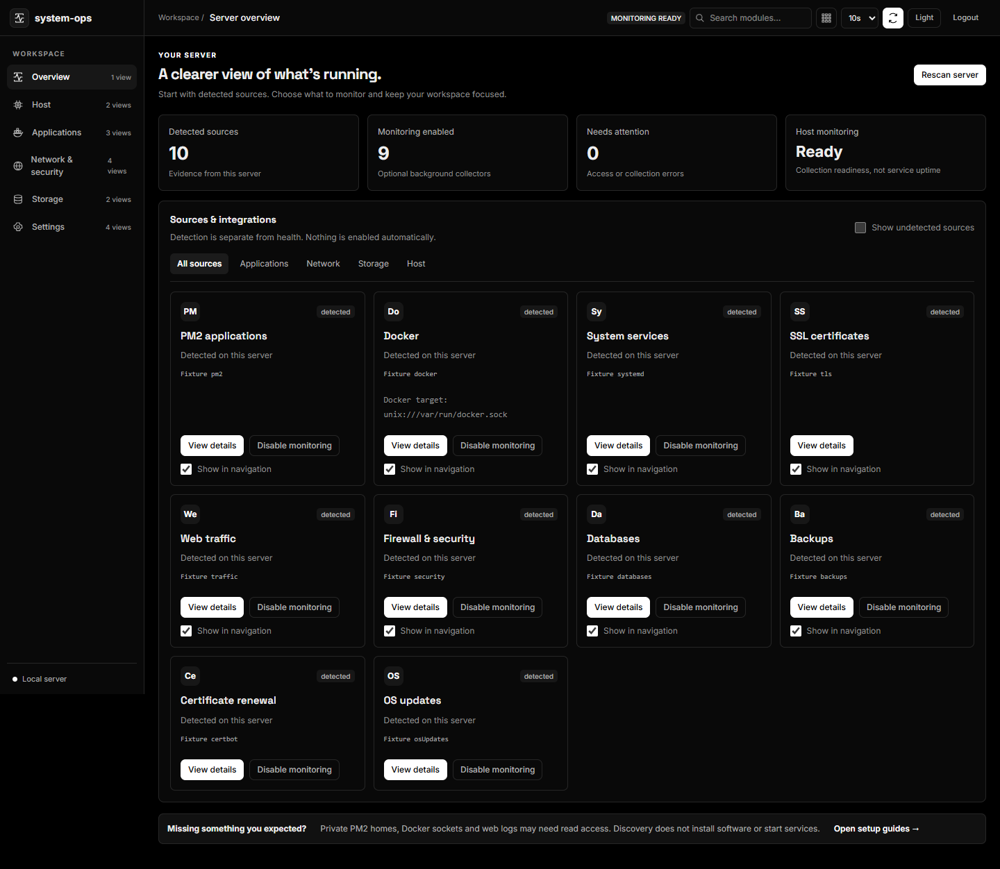

Host & processes
CPU, memory, disks, processes, and systemd journals. See freshness and source errors alongside your data.
Host visibility →Your host, services, and signals in one place. Inspect what’s running, follow the logs, and see when a source needs your attention.

Bring the essentials of a single host together. Integrations stay optional, and detection is kept separate from health.
CPU, memory, disks, processes, and systemd journals. See freshness and source errors alongside your data.
Host visibility →Inspect PM2, Docker, Ollama, and database availability where those sources exist and permissions allow access.
Integration setup →Configure HTTP and TCP checks, retain observations, and track outage/recovery transitions with coverage shown.
Availability checks →Follow service and runtime logs. Explore bounded Nginx analytics with optional geolocation enrichment.
Traffic and retention →Send webhook alerts with visible delivery state. Export protected metrics to optional Prometheus and Grafana.
Connect monitoring →Review configured backup files and logs. Stage native updates with readiness gates and rollback.
Updates and recovery →Native Ubuntu/systemd gives the console its host view. Review the installer, choose your credentials, and open the dashboard through an SSH tunnel or HTTPS.
Prefer Docker? The image includes the console with a narrower view of host services. Check the deployment comparison before choosing.
# Download, inspect, then install
$ curl -fsSL https://raw.githubusercontent.com/dineshkorukonda/system-ops/main/scripts/install.sh -o /tmp/system-ops-install.sh
$ less /tmp/system-ops-install.sh
$ sudo bash /tmp/system-ops-install.shThe code, configuration, and operating guides are open. Start with the sources you have, understand the permissions they need, and keep a recovery path outside the dashboard.
Read the architecture →Community support is best effort. Share a reproducible problem, improve a guide, or help test an integration.
Start with installation, configuration, and symptom-based troubleshooting. Ask usage questions in Discussions.
Documentation and support →Use the bug form with your version and sanitized diagnostics. Report security vulnerabilities privately.
Open an issue →Code, docs, accessibility, and test evidence all help. Read the contribution guide before your first PR.
Contributor guide →Start with a single VPS and the sources you need.